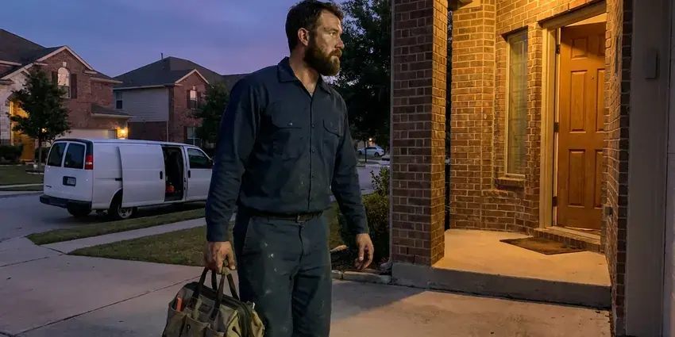

Slab Leak Detection in Council Bluffs, IA
If you suspect a slab leak in your Council Bluffs, IA home, KFR Plumbing provides prompt, accurate detection to prevent further damage and costly repairs.
- Foundation Protection
- Experienced Plumbers
- Advanced Diagnostics
- Advanced Technology
Get Accurate Slab Leak Detection From Local Pros in Council Bluffs, IA.
Don't let a hidden leak damage your home's foundation, contact KFR Plumbing for prompt service.
Your Specialists for Slab Leak Detection in Council Bluffs, IA
When water lines or drain pipes under your foundation develop leaks, KFR Plumbing is your reliable partner for professional slab leak detection in Council Bluffs, IA. We diagnose the problem efficiently, offering straightforward solutions to protect your home's structural integrity.
Our expertise includes:
- Electronic leak detection for hidden pipe breaks.
- Thermal imaging to identify subtle temperature changes
- Thermal imaging cameras to detect temperature changes from leaks.

Additional Plumbing Maintenance Services in Council Bluffs, IA
Our maintenance and specialty plumbing services in Council Bluffs, IA protect your home year-round and extend the life of every system.


Customers
Why Choose KFR Plumbing for Slab Leak Detection in Council Bluffs, IA?
We locate the leak, explain your repair options and help you decide between spot repair, rerouting and repiping. Our recommendations are based on the condition of your pipes, not on selling the largest job.
- Insurance Ready, We document findings with photos and readings for your insurance claim.
- Property Value, Undetected and unrepaired slab leaks can seriously diminish your home's value and make it difficult to sell in the future.
- Water Bills, Even a small slab leak can waste hundreds of gallons of water a day, causing your water bills to jump dramatically.
Citywide Coverage
KFR Plumbing serves every neighborhood in Council Bluffs, so no matter where you are, expert slab leak detection is just a call away. We understand the plumbing layouts common in different parts of Council Bluffs.
Experienced Team
Each technician at KFR Plumbing undergoes regular training on current leak detection technologies and repair methods. This expertise lets us accurately diagnose and recommend the best course of action for your slab leak in Council Bluffs, IA.
Safety-First Approach
Post-tension slabs contain high-tension steel cables that must never be cut, so we locate those cables before any concrete work. All repairs meet the plumbing code adopted by your city or county.
Trusted Certified Council Bluffs Plumbing Services Professionals
At KFR Plumbing, we take pride in providing licensed, certified plumbing services throughout Council Bluffs, IA. Backed by recognized industry credentials, our experienced plumbers combine technical skill with genuine customer care. Whether it is repair, installation, or maintenance, we follow strict safety and quality standards to deliver long-lasting results you can trust.
Call Us Now PHCC Plumbing Contractor Recognition
PHCC Plumbing Contractor Recognition Better Business Bureau (BBB) Accreditation
Better Business Bureau (BBB) Accreditation Angi Certified Pro
Angi Certified Pro ISO 9001 Quality Management Certification
ISO 9001 Quality Management CertificationReliable Slab Leak Detection Services in Council Bluffs, IA
Cost-Effective Slab Leak Detection in Council Bluffs
Investing in professional slab leak detection with KFR Plumbing is a budget-friendly solution compared to the long-term damage of an undetected leak. Our accurate diagnosis prevents unnecessary excavation and helps you address the problem before it escalates into expensive foundation repairs or mold remediation, protecting your investment in your Council Bluffs property.

Commercial Slab Leak Detection in Council Bluffs, IA
Commercial properties in Council Bluffs, IA also face the risk of slab leaks, which can disrupt business operations and lead to significant structural damage. KFR Plumbing offers specialized detection services for businesses, using the same technology to minimize downtime. We work efficiently to locate leaks in offices, retail spaces and other commercial buildings.
Repiping After Multiple Slab Leaks in Council Bluffs, IA
If your home has had two or more slab leaks, the remaining pipe is likely corroded too. Repiping replaces all supply lines with new PEX or copper run through the walls and attic. It is a bigger project, but it ends the cycle of repeat slab leaks. We can typically complete a full repipe in two to four days.
Residential Slab Leak Detection in Council Bluffs
We provide complete slab leak detection services tailored for residential properties throughout Council Bluffs. From single-family homes to townhouses, we understand the common plumbing systems and foundation types found in the area. Our goal is to promptly find the leak, provide a clear explanation and offer effective repair solutions to protect your home and peace of mind.
Slab Leak Detection and Repair Cost Comparison in Council Bluffs, IA
Slab leak detection typically costs $150 to $450. Direct access repairs usually run $1,000 to $3,000, including concrete patching but not flooring replacement. Reroutes generally cost $800 to $3,500 depending on distance and access. Full repipes cost more, often $4,000 to $15,000, but end the problem for good.
Slab Leak Repair Through Direct Access in Council Bluffs, IA
When a single leak is found on otherwise healthy pipe, direct access can be the most affordable repair. We cut a small opening in the floor at the marked spot, repair the pipe and pressure test it. Then we patch the concrete and leave the area ready for flooring. Accurate detection keeps that opening as small as possible.
Cold Water Slab Leak Detection in Council Bluffs, IA
Cold water slab leaks do not create warm spots, so they are more difficult to see. They often show up as a running water meter, damp carpet, a musty smell or water seeping at baseboards. We isolate the cold side and use acoustic equipment to listen for the leak through the slab. Line tracers map the pipe route so we know where to listen.

Post-Tension Slab Leak Detection in Council Bluffs
Many newer homes are built on post-tension slabs that use steel cables under high tension. Cutting into one without care is dangerous and can damage the foundation. We locate the cables with scanning equipment before any repair access is opened. This lets us repair the leak without risk or recommend a reroute that avoids the slab entirely.
Slab Leak Detection Near Me in Council Bluffs, IA
When you search for 'slab leak detection near me' in Council Bluffs, IA, KFR Plumbing is your trusted local expert. Our rapid response team is always ready to head to your location, equipped with the best tools to find and diagnose any hidden leaks. We pride ourselves on being a dependable service provider for the entire Council Bluffs area.
Don't let a hidden leak compromise your home's foundation. For professional slab leak detection near me, contact KFR Plumbing today. We offer prompt, efficient service to residents and businesses throughout Council Bluffs, IA, so your plumbing issues are resolved quickly and effectively.
KFR Plumbing at a Glance
- Licensed and insured plumbers serving Council Bluffs, IA
- Same-day appointments and 24/7 emergency response
- Clear written estimates, no hidden fees
- 4.8-star rated by 620+ Iowa customers
Council Bluffs Map
Council Bluffs Information
- Population
- 62,399
- Area codes
- 712/641/402
- Service area
- Council Bluffs and communities within 40 miles
- Nearby
- Sioux City, Waukee, West Des Moines, Urbandale
Slab leak detection matters for homes in Council Bluffs, IA because soil movement can stress underground pipes, leading to leaks that can undermine foundations if not promptly addressed.
Expert Services
Trust our professionals for reliable KFR Plumbing solutions in Council Bluffs, IA.
Our Specialized Plumbing Services in Council Bluffs, IA
At KFR Plumbing, we provide a complete range of plumbing services across Council Bluffs, IA. From leak detection to full system installations, our team ensures fast, precise, and affordable service for both residential and commercial properties. Explore our core services below:


How Our Slab Leak Detection Process Works in Council Bluffs, IA
We follow a step-by-step process that confirms the leak before we ever recommend opening the floor.
Request a Quote
Contact KFR Plumbing at (515) 308-3583 to schedule your slab leak detection service. Our helpful staff will gather initial information about your concerns and set up a convenient appointment time.
On-Site Inspection
Our certified technician will arrive at your home to perform a thorough visual inspection and initial assessment of your plumbing system, looking for signs of a leak.
Advanced Detection
Using professional tools like acoustic listening devices, thermal cameras or electronic leak detectors, we'll pinpoint the exact location of the slab leak with high accuracy.
Frequently Asked Questions About Slab Leak Detection in Council Bluffs
Slab leak detection in Council Bluffs typically costs $150 to $450. Repairs range from about $800 for a simple reroute to $3,000 or more for direct access under finished floors. We provide a written estimate after finding the leak.
Yes, KFR Plumbing stands behind our work. We offer a warranty on our slab leak detection services, standing behind the accuracy of our findings. Any subsequent repair work performed by us also comes with a full warranty on parts and labor, providing you with peace of mind.
Some homeowner's insurance policies may cover the cost of accessing and repairing the slab leak, especially if the leak was sudden and accidental. However, coverage often varies, and damage caused by long-term neglect might not be covered. We recommend checking your specific policy details or contacting your insurance provider for clarification.
Direct repair works well for a single leak on otherwise healthy pipe in an accessible spot. Rerouting is often better under tile or hardwood and avoids future leaks on that line. We help you weigh both.
Yes. Our slab leak repairs and reroutes carry a written workmanship warranty, and PEX systems from brands like Uponor include long manufacturer warranties. We explain the coverage before you approve the work. That gives you peace of mind on the job.
While you can look for the signs, accurately detecting a slab leak requires specialized equipment and expertise that most homeowners don't have. DIY attempts often lead to more damage or misdiagnosis, making professional detection a more cost-effective and reliable solution in the long run.
Common signs of a slab leak in Iowa homes include unexplained increases in water bills, warm spots on your floor, the sound of running water when no fixtures are in use, damp or mildewy smells and visible cracks in your foundation or walls. Pooling water outside your home near the foundation can also be a strong indicator.
Many policies cover the cost to access the leak and repair resulting water damage, though the pipe itself may not be covered. Coverage varies by insurer. We provide photos and a detailed report for your claim.
What People Are Saying About Our Plumbing Experts?

Emily R.
I called KFR Plumbing for plumbing repair, and the technician was fast, polite, and thorough. They explained the problem clearly and fixed it the same day. I will definitely hire them again. Highly recommended!
Plumbing Repair · Ankeny, IA
Laura S.
I scheduled a water heater replacement, and the team made the process smooth and affordable. The new unit works perfectly, and they cleaned up after completing the job.
Water Heater Replacement · Urbandale, IA
Daniel K.
A pipe burst at 11 pm and they actually answered. The plumber showed up within the hour, shut everything down, and had us back to normal the next morning. Could not ask for more.
Emergency Plumbing · Waukee, IA
Robert G.
The trenchless sewer replacement saved our front yard. They walked us through the camera inspection footage first so we knew exactly what we were paying for.
Sewer Line Replacement · West Des Moines, IASofia M.
Two new toilets installed in one visit, no mess left behind, and the tech even adjusted a faucet he noticed was dripping. Fair pricing and really friendly.
Toilet Installation · Council Bluffs, IAJames P.
Our commercial plumbing system had a leak under the sink, and KFR Plumbing handled it professionally. The plumbers arrived quickly and restored everything without disruption to our customers.
Commercial Plumbing · Ankeny, IA